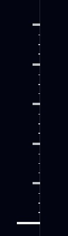

Example 3
Page Progress Bar
Copied HTML
insights
Explore bookmark-worthy insights from our experts
This item's code is a little bit hidden in the page's markdown, contained within the main page's code. The length of the notches changes depending on where the user is at on the entire page.